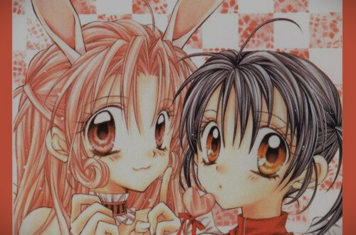
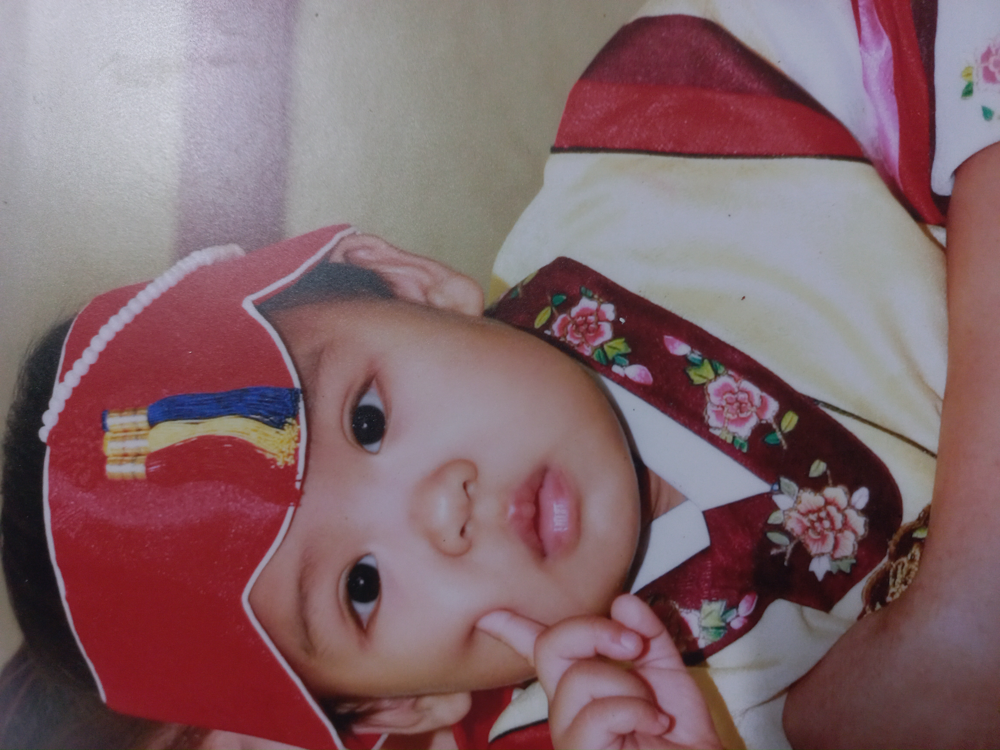

그땐 그랬지
추억 속으로~
내맘대로명작선
내.싫.만
추억의 오프닝 만나보기

그땐
그랬지...
여러분은 만화영화를 언제부터 찾아보고 언제부터 찾지 않게 됐나요?
다양한 연령대와 타켓층을 공략한 애니메이션이 여전히 잘 나와서 어렸을 때 뿐만 아니라 지금도 즐겨보시는 분들이 많을 것 같습니다!
하지만!! 초등학교가 끝나면 집으로 돌아와 투니버스를 켰던 그 때의 감성과 즐거움이 항상 그리운 것 같습니다.
응답하라! 2010~
프로필

경력
2011년~ 2018년까지 tv채널을 돌리며 당시에 니온 만화는 모두 챙겨봤습니다.
재능TV,닉켈로디언,카툰네트워크,챔프,투니버스,애니박스 모두 마스터 했습니다.
쥬니어네이버에 들어가서 (게임도 하고) 만화를 찾아보았습니다.
그것도 부족해서 유튜브에 올라온 저작권 신고 당하지 않은 옛날 만화를 찾아보기도 했습니다.
짱구 따라하다 혼난 적 있습니다. 부리부리 댄스를 따라했었습니다.